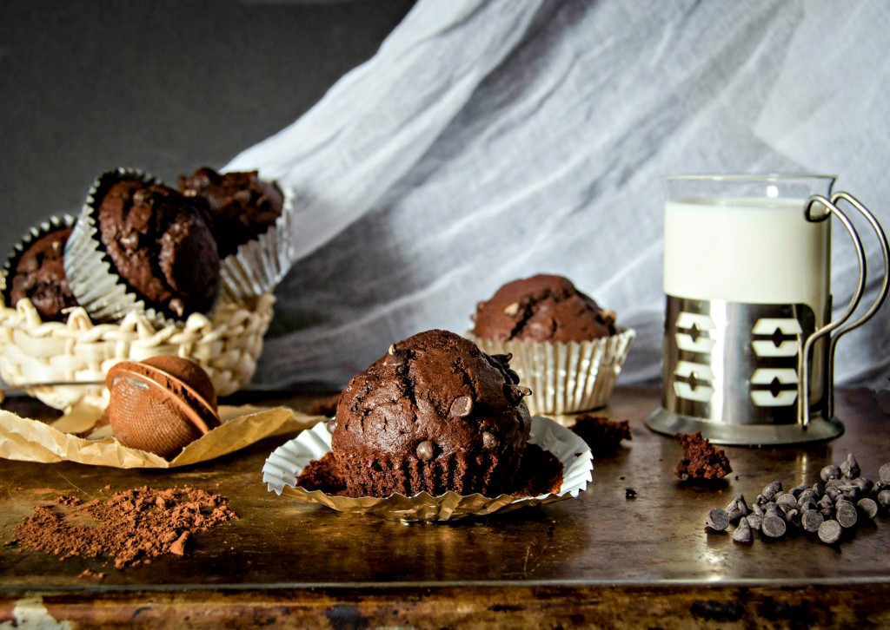

JK loves muffins
Hello again! I am back to talk to you all about one of my obsessions. Also known as muffins. I have baked countless of batches of muffins, ranging all the way from classic flavors, to fabulous combinations, and anything in between. Or so I thought. Whenever I think I’ve made and eaten it all, another version of my beloved morning treats pops into my head and I can hardly turn on my mixer fast enough, ha. Today’s recipe was no exception. Since I’ve developed a huge love for fresh or frozen fruit, especially berries, in my baked goods and desserts, I was beyond thrilled when I was whipping up these muffins.